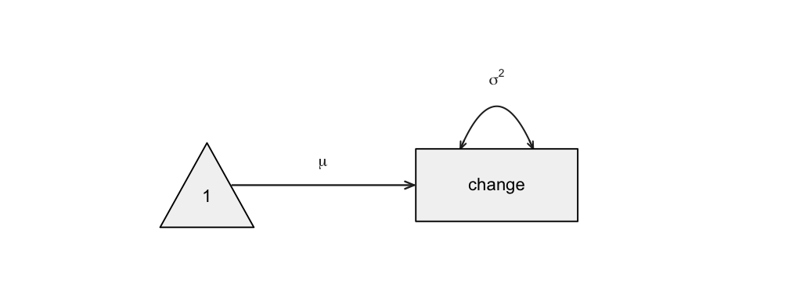
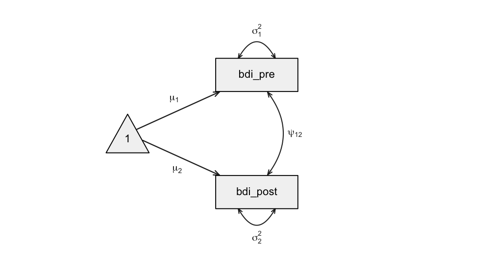
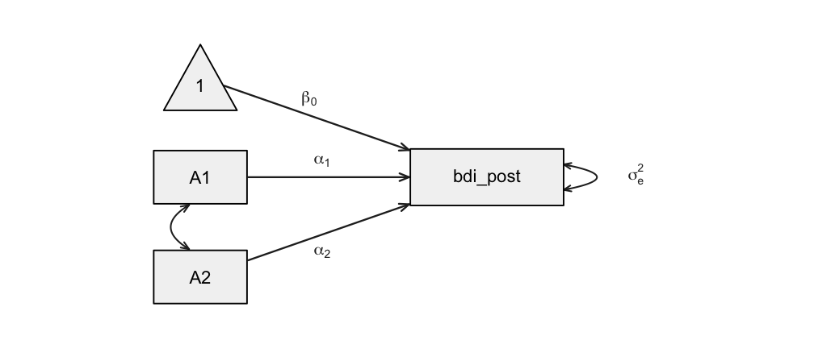
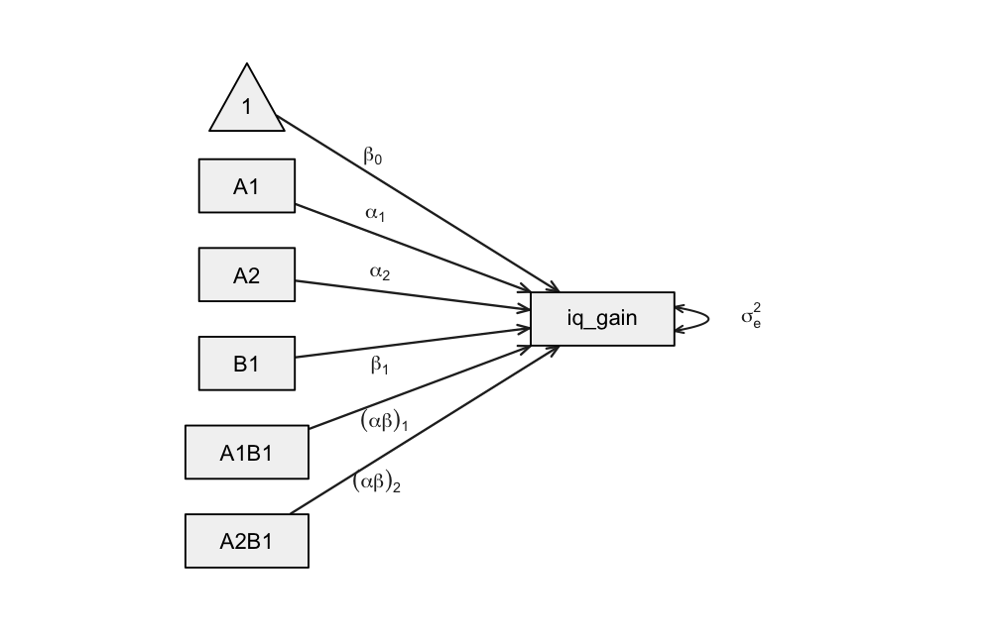
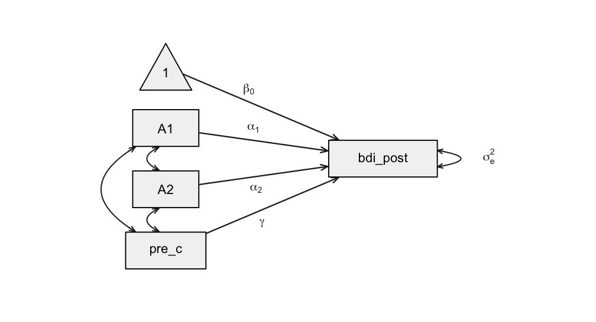

Classical Tests as Path Models in lavaan
Ken Kelley
November 2026
Source:vignettes/anova_as_path_model.Rmd
anova_as_path_model.RmdWhat This Vignette Is For
Every analysis in the first two thirds of a first-year sequence, the
single sample t test, the paired t test, the one way
analysis of variance, the factorial analysis of variance, and the
analysis of covariance, is the same linear model with a different design
matrix. Structural equation modeling software fits that linear model
too. So each of these classical analyses can be written as a path model
and estimated in lavaan, and the answers can be made to
agree with the textbook answers to the last decimal place.
Doing so is worth the trouble for three reasons. The first is
conceptual: the path diagram makes visible what a design factor actually
contributes to a model, which is a set of columns, and it makes visible
that the choice of those columns is a choice of hypothesis. The second
is practical: once an analysis of variance is a path model, the
machinery of structural equation modeling is available to it, including
full information maximum likelihood for missing data, latent variables
in place of fallible observed outcomes, and simultaneous models for
several outcomes. The third is diagnostic: when a path model and an
aov() call disagree, the disagreement is always
informative, and this vignette is largely about the two places it comes
from.
The examples follow the running examples of Maxwell, Delaney, and
Kelley (2027) and use data that ship with DMAR. The companion vignette
vignette("sums_of_squares", package = "DMAR") treats the
sums of squares types in their own right; here they appear only where
the coding of a factor forces the issue.
The Two Facts That Make the Equivalence Exact
Two things stand between a naive lavaan path model and
the classical answer. Neither is subtle once stated, and both recur in
every section below.
A Factor Is Not a Variable, It Is a Set of Columns
R hides this. When aov() is handed
y ~ condition with a three-level condition, it
silently builds two numeric columns and regresses on them.
lavaan does not build them for you: its model syntax takes
variables, so the columns must be constructed before the model is
written. That turns out to be a feature for teaching, because the choice
of columns is exactly the choice of what the eventual test means, and
the section “Coding a Factor” below is devoted to it.
Maximum Likelihood Divides by N, the Classical Test Divides by the Error Degrees of Freedom
The maximum likelihood estimate of a residual variance is
whereas every classical t and F statistic uses the unbiased estimate
lavaan reports the first. Its standard errors are
therefore slightly too small, its z statistics slightly too
large, and its p-values slightly too small. The two estimates
differ by the factor
,
so every classical statistic is recovered exactly by rescaling:
where is the Wald chi square statistic for a set of constraints and is the error degrees of freedom of the corresponding classical analysis. The correction is not a fudge factor. It is the statement that the classical test refers its evidence to a distribution with finite degrees of freedom, while the Wald statistic refers to its large sample limit.
The whole of the rescaling is these two functions, used throughout.
# Convert a lavaan z statistic into the classical t statistic.
z_to_t <- function(z, N, df_error) {
t_value <- z * sqrt(df_error / N)
data.frame(term = c("t_value", "df", "p_value"),
value = c(t_value, df_error,
2 * pt(abs(t_value), df_error, lower.tail = FALSE)))
}
# Convert a lavaan Wald chi square for q constraints into the classical F.
W_to_F <- function(W, q, N, df_error) {
F_value <- (W / q) * (df_error / N)
data.frame(term = c("F_value", "df_1", "df_2", "p_value"),
value = c(F_value, q, df_error,
pf(F_value, q, df_error, lower.tail = FALSE)))
}One point of care about fixed.x. In a designed
experiment the code variables are constants that the investigator
assigned, not random variables sampled from a population, and a
covariate measured before randomization is conditioned upon in the
classical analysis as well. Setting fixed.x = TRUE, which
is the default for exogenous variables in lavaan when a
model has no latent variables, encodes exactly that: the model
conditions on the predictors and estimates nothing about their
distribution. With fixed.x = FALSE the model would spend
parameters estimating means and covariances among design constants,
which changes the fit statistics and has no substantive referent in an
experiment.
The Data
Two data sets carry the whole vignette.
depression_bdi is the three-group depression study of
Maxwell, Delaney, and Kelley (2027, Chapter 9, Table 9.7). Thirty
depressive individuals were assigned at random, ten per group, to a
selective serotonin reuptake inhibitor, to a placebo, or to a wait list.
Depression was measured on the Beck Depression Inventory before
treatment and again afterward, so the data support a paired comparison,
a one way analysis of variance on the post-test, and an analysis of
covariance that uses the pre-test as the covariate.
data(depression_bdi)
descriptives(depression_bdi[, c("bdi_pre", "bdi_post")])$descriptives
#> variable type n n_missing prop_missing mean median sd min max
#> 1 bdi_pre numeric 30 0 0 17.36667 16 5.102287 9 29
#> 2 bdi_post numeric 30 0 0 11.16667 10 6.721470 0 25
#> q25 q75 skewness kurtosis
#> 1 14.0 20.75 0.4091667 -0.5022401
#> 2 7.5 15.00 0.1844200 -0.4817713
# Cell means, which every model below is a reparameterization of.
round(with(depression_bdi,
cbind(pre = tapply(bdi_pre, condition, mean),
post = tapply(bdi_post, condition, mean))), 3)
#> pre post
#> ssri 17.0 7.3
#> placebo 17.7 12.2
#> wait_list 17.4 14.0pygmalion is the teacher expectancy experiment of
Rosenthal and Jacobson (1968). Within each of grades 1 through 6, a
randomly chosen fifth of the children were identified to their teachers
as “bloomers” who would show unusual intellectual gains in the coming
year, although the names had in fact been drawn at random. The outcome
used here is iq_gain, the change in measured IQ over the
year. Grade is collapsed into three bands so that the design is a 3 by 2
factorial, and because the expectancy effect was reported to concentrate
in the earliest grades.
data(pygmalion)
pygmalion$band <- factor(
ifelse(pygmalion$grade <= 2, "early",
ifelse(pygmalion$grade <= 4, "middle", "late")),
levels = c("early", "middle", "late"))
table(pygmalion$band, pygmalion$treatment)
#>
#> Control Bloomer
#> early 91 19
#> middle 87 25
#> late 68 20The cell sizes are very unequal, which is what makes
pygmalion useful: it is used first in a balanced subsample,
where the classical decomposition is unique, and then in full, where it
is not.
The Single Sample t Test
The question is whether the wait list participants changed at all over the interval, when nothing was done for them. The outcome is the change score, post-test minus pre-test, and the null hypothesis is that its mean is zero.

The model has one free mean and one free variance, so it is saturated: it reproduces the sample mean and the sample variance exactly and has zero degrees of freedom as a model. All of the inference lives in the intercept.
wl <- subset(depression_bdi, condition == "wait_list")
wl$change <- wl$bdi_post - wl$bdi_pre
N <- nrow(wl)
fit_t1 <- sem("change ~ 1", data = wl, meanstructure = TRUE)
pe_t1 <- parameterEstimates(fit_t1)
pe_t1[pe_t1$op == "~1", c("lhs", "est", "se", "z", "pvalue")]
#> lhs est se z pvalue
#> 1 change -3.4 1.457 -2.333 0.02The estimate is the sample mean and needs no correction. The standard error and the z statistic do, because the variance behind them was divided by rather than by .
z_t1 <- pe_t1$z[pe_t1$op == "~1"]
z_to_t(z_t1, N = N, df_error = N - 1)
#> term value
#> 1 t_value -2.21321149
#> 2 df 9.00000000
#> 3 p_value 0.05416072
# The classical test.
t.test(wl$change, mu = 0)
#>
#> One Sample t-test
#>
#> data: wl$change
#> t = -2.2132, df = 9, p-value = 0.05416
#> alternative hypothesis: true mean is not equal to 0
#> 95 percent confidence interval:
#> -6.87519177 0.07519177
#> sample estimates:
#> mean of x
#> -3.4The corrected statistic agrees with t.test() exactly. A
nonzero null is a constraint on the intercept rather than a different
model, which is worth seeing once because it is the same device that
carries every test later in the vignette.
fit_t1b <- sem("change ~ mu * 1", data = wl, meanstructure = TRUE)
W <- lavTestWald(fit_t1b, constraints = "mu == -5")$stat
W_to_F(W, q = 1, N = N, df_error = N - 1) # F on 1 and N - 1 df is t squared
#> term value
#> 1 F_value 1.084746
#> 2 df_1 1.000000
#> 3 df_2 9.000000
#> 4 p_value 0.324807
t.test(wl$change, mu = -5)$statistic^2
#> t
#> 1.084746The wait list participants improved by -3.4 points on average, but the interval is consistent with no change (t(9) = -2.213, p = 0.0542, 95% CI [-6.88, 0.08]).
The Paired Samples t Test
The same device answers a different question for the treated group: did the participants who received the serotonin reuptake inhibitor improve from pre-test to post-test?
Forming the change score by hand, as above, would work. The more instructive path model leaves the two measurements as they are, gives each its own mean, lets them covary, and defines the difference as a function of the two means. This is the model a reader of a structural equation modeling text would recognize, and it generalizes directly: with three or more occasions it becomes a repeated measures model, and with several indicators per occasion it becomes a latent change model.

ss <- subset(depression_bdi, condition == "ssri")
N <- nrow(ss)
model_t2 <- "
bdi_pre ~ m1 * 1
bdi_post ~ m2 * 1
bdi_pre ~~ bdi_post # the paired part of the paired test
change := m2 - m1 # the estimand, as a function of two means
"
fit_t2 <- sem(model_t2, data = ss, meanstructure = TRUE)
pe_t2 <- parameterEstimates(fit_t2)
pe_t2[pe_t2$op == ":=", c("label", "est", "se", "z", "pvalue")]
#> label est se z pvalue
#> 6 change -9.7 1.53 -6.34 0lavaan obtains the standard error of the defined
parameter by the delta method, which here reduces to
,
the standard error of the difference score. The same correction as
before turns it into the classical statistic.
z_to_t(pe_t2$z[pe_t2$op == ":="], N = N, df_error = N - 1)
#> term value
#> 1 t_value -6.0143996375
#> 2 df 9.0000000000
#> 3 p_value 0.0001989574
t.test(ss$bdi_post, ss$bdi_pre, paired = TRUE)
#>
#> Paired t-test
#>
#> data: ss$bdi_post and ss$bdi_pre
#> t = -6.0144, df = 9, p-value = 0.000199
#> alternative hypothesis: true mean difference is not equal to 0
#> 95 percent confidence interval:
#> -13.348398 -6.051602
#> sample estimates:
#> mean difference
#> -9.7Two features of this model repay attention. It is saturated, with 0
degrees of freedom, because five parameters reproduce two means, two
variances, and one covariance; a saturated model is what an exact
reproduction of a classical test always requires. And deleting the
single line bdi_pre ~~ bdi_post would convert it into the
independent samples test, which is a vivid way of showing what pairing
buys.
Participants receiving the serotonin reuptake inhibitor improved by -9.7 points on the Beck Depression Inventory (t(9) = -6.014, p = 0.0002, 95% CI [-13.35, -6.05]). Whether that improvement exceeds what the placebo and wait list groups show is the question the next sections take up, and it is not the same question.
Coding a Factor: What the Columns Mean
This is the section the rest of the vignette depends on.
The Model That Cannot Be Fitted
Write the three-group design in the form the textbook does, with a grand mean and a deviation for each group:
There are three cell means on the left and four parameters on the right. No data can tell the four apart: adding a constant to and subtracting it from every leaves all three cell means unchanged. The design matrix is rank deficient and the parameters are not estimable. To fit the model, one restriction has to be imposed, and imposing it is all that a coding scheme does. A coding scheme is a choice of restriction, that is, a choice of which full rank set of columns will stand in for the factor.
Every coding scheme spans the same column space. So the fitted cell means, the residuals, the error sum of squares, and are the same under all of them. What changes is what an individual coefficient means, and, once more than one factor is present, what a test of a set of coefficients means.
Indicator Coding, Which R Uses by Default
R’s default for an unordered factor is contr.treatment,
usually called dummy or indicator coding. The restriction is
:
the first level is made the reference and the other levels are expressed
relative to it.
d <- depression_bdi
contrasts(d$condition) <- contr.treatment(3)
unique(cbind(condition = as.character(d$condition),
as.data.frame(model.matrix(~ condition, d))))
#> condition (Intercept) condition2 condition3
#> 1 ssri 1 0 0
#> 11 placebo 1 1 0
#> 21 wait_list 1 0 1Reading the columns as a human would: the first column is the intercept, on in every row. The second column is on only for placebo participants, so its coefficient is the amount by which placebo differs from the reference group, here the serotonin reuptake inhibitor. The third is on only for the wait list, so its coefficient is the wait list difference from the same reference. The intercept is the mean of the reference group itself, not any kind of average.
Indicator coding is the right choice when the reference level is substantively privileged, as a control or placebo arm often is, because then every coefficient is a comparison a reader wants.
Effects Coding, Which the Analysis of Variance Assumes
The restriction the analysis of variance imposes is instead
,
that the group deviations sum to zero. This is contr.sum,
called effects coding. DMAR supplies effects_coding(),
which builds the same matrix but names its columns after the levels they
represent, so that the model output is readable.
contrasts(d$condition) <- effects_coding(levels(d$condition))
effects_coding(levels(d$condition))
#> ssri placebo
#> ssri 1 0
#> placebo 0 1
#> wait_list -1 -1
unique(cbind(condition = as.character(d$condition),
as.data.frame(model.matrix(~ condition, d))))
#> condition (Intercept) conditionssri conditionplacebo
#> 1 ssri 1 1 0
#> 11 placebo 1 0 1
#> 21 wait_list 1 -1 -1Reading these columns: the ssri column is 1 for the
serotonin reuptake inhibitor group, 0 for placebo, and -1 for the wait
list. The last level is not a reference in the sense that indicator
coding uses the word. It is the level whose deviation is not given a
column, because the restriction already determines it: the three
deviations sum to zero, so the third is minus the sum of the first two.
Every level is represented; one of them is represented implicitly.
The consequence is that the coefficients mean something different, and the difference is exactly the difference between the two ways of averaging.
fit_lm <- lm(bdi_post ~ condition, data = d)
round(coef(fit_lm), 6)
#> (Intercept) conditionssri conditionplacebo
#> 11.166667 -3.866667 1.033333
cell_means <- tapply(d$bdi_post, d$condition, mean)
round(c(cell_means, grand = mean(cell_means)), 6)
#> ssri placebo wait_list grand
#> 7.30000 12.20000 14.00000 11.16667The intercept is the unweighted mean of the three cell means, and each coefficient is one cell mean minus that grand mean. Under indicator coding the intercept was a single group’s mean. Here it is the center of the design.
Why the Choice Does Not Matter Yet
In a one way design, both codings give the same omnibus test, because the joint hypothesis they express is the same one. Under indicator coding the two coefficients are and , so setting both to zero says all three means are equal. Under effects coding they are and , so setting both to zero says the first two means equal the grand mean, and the sum to zero restriction forces the third to as well. Same hypothesis, different route.
d_dummy <- d; contrasts(d_dummy$condition) <- contr.treatment(3)
d_effects <- d; contrasts(d_effects$condition) <- contr.sum(3)
c(dummy = anova(lm(bdi_post ~ condition, d_dummy))[1, "F value"],
effects = anova(lm(bdi_post ~ condition, d_effects))[1, "F value"])
#> dummy effects
#> 3.034776 3.034776The choice starts to matter the moment a second factor and its interaction enter the model, because then the columns for one factor are multiplied by the columns for the other. That is the subject of the two way sections, and the rule that emerges there is worth stating in advance: a factor’s main effect test comes out right when the other factor is coded to sum to zero.
The One Way ANOVA
The substantive question is whether the three conditions differed on post-test depression.

The code variables are built once and carried into a plain data
frame, which is what lavaan wants.
contrasts(d$condition) <- effects_coding(levels(d$condition))
X <- model.matrix(~ condition, d)
colnames(X) <- c("intercept", "A1", "A2")
dat1 <- data.frame(bdi_post = d$bdi_post, X[, c("A1", "A2")])
head(dat1, 3)
#> bdi_post A1 A2
#> 1 12 1 0
#> 2 0 1 0
#> 3 10 1 0
model_1 <- "
bdi_post ~ a1 * A1 + a2 * A2
bdi_post ~ 1
"
fit_1 <- sem(model_1, data = dat1, fixed.x = TRUE, meanstructure = TRUE)
N <- lavaan::nobs(fit_1)
p <- 3 # intercept plus two code variables
df_error <- N - p
parameterEstimates(fit_1)[1:3, c("lhs", "rhs", "est", "se", "z", "pvalue")]
#> lhs rhs est se z pvalue
#> 1 bdi_post A1 -3.867 1.542 -2.508 0.012
#> 2 bdi_post A2 1.033 1.542 0.670 0.503
#> 3 bdi_post 11.167 1.090 10.243 0.000The omnibus null hypothesis is that the factor contributes nothing, which is a joint constraint on both of its coefficients at once. A test of one coefficient at a time is not the analysis of variance.
W <- lavTestWald(fit_1, constraints = "a1 == 0; a2 == 0")$stat
W_to_F(W, q = 2, N = N, df_error = df_error)
#> term value
#> 1 F_value 3.03477611
#> 2 df_1 2.00000000
#> 3 df_2 27.00000000
#> 4 p_value 0.06473342
print_anova(anova(lm(bdi_post ~ condition, data = d)))
#> Analysis of Variance Table
#>
#> Response: bdi_post
#>
#> Df Sum Sq Mean Sq F value Pr(>F)
#> condition 2 240.4667 120.23333 3.034776 0.0647
#> Residuals 27 1069.7000 39.61852 NA <NA>The two agree exactly. The sums of squares can be read off the path model as well, since the maximum likelihood residual variance times N is the error sum of squares.
SSE <- N * coef(fit_1)[["bdi_post~~bdi_post"]]
c(SSE_from_lavaan = SSE,
SSE_from_aov = anova(lm(bdi_post ~ condition, data = d))[2, "Sum Sq"])
#> SSE_from_lavaan SSE_from_aov
#> 1069.7 1069.7The omnibus effect size and its confidence interval:
a1 <- anova(lm(bdi_post ~ condition, data = d))
es_1 <- ci_eta_squared(F_value = a1[1, "F value"], df_effect = 2,
df_error = df_error, N = N, estimand = "partial")
#> Warning: The observed F_value is below the alpha_lower critical value of the
#> central F-distribution, so the lower confidence limit on partial eta squared is
#> 0.
es_1| effect | eta_squared_partial | eta_squared_partial_ci_lower | eta_squared_partial_ci_upper | F_value | df_effect | df_error | N |
|---|---|---|---|---|---|---|---|
| overall | 0.184 | 0.000 | 0.388 | 3.035 | 2 | 27 | 30 |
Confidence level: 95%
On post-test depression the three conditions gave F(2, 27) = 3.035, p = 0.0647, partial eta squared = 0.184, 95% CI [0, 0.388]. The interval runs from zero to 0.388, so these data are consistent with the conditions accounting for none of the variability in post-test depression and equally consistent with their accounting for a substantial share of it. That is the sample size speaking rather than the treatments. The analysis of covariance section returns to these same data and reaches a different conclusion, for a reason worth understanding.
The Two Way Factorial, Balanced
A 3 by 2 factorial needs five code variables: two for the three-level factor, one for the two-level factor, and the two products that carry the interaction. The products are built from the coded columns, never from the factor levels directly, which is the step where an incorrect coding does its damage.

To keep the first factorial example orthogonal, take a balanced subsample with as many children per cell as the smallest cell allows.
set.seed(113)
n_cell <- min(table(pygmalion$band, pygmalion$treatment))
idx <- unlist(lapply(
split(seq_len(nrow(pygmalion)), list(pygmalion$band, pygmalion$treatment)),
function(i) sample(i, n_cell)))
balanced <- droplevels(pygmalion[sort(idx), ])
table(balanced$band, balanced$treatment)
#>
#> Control Bloomer
#> early 19 19
#> middle 19 19
#> late 19 19One function builds the five columns, so that the balanced and unbalanced analyses differ in nothing but their data.
design_3x2 <- function(dat) {
dat$band <- factor(dat$band)
dat$treatment <- factor(dat$treatment)
contrasts(dat$band) <- effects_coding(levels(dat$band))
contrasts(dat$treatment) <- effects_coding(levels(dat$treatment))
X <- model.matrix(~ band * treatment, dat)
colnames(X) <- c("intercept", "A1", "A2", "B1", "A1B1", "A2B1")
data.frame(iq_gain = dat$iq_gain, X[, -1])
}
dat2 <- design_3x2(balanced)
head(dat2, 3)
#> iq_gain A1 A2 B1 A1B1 A2B1
#> 9 -7 1 0 1 1 0
#> 13 55 1 0 1 1 0
#> 14 25 1 0 1 1 0
model_2 <- "
iq_gain ~ a1 * A1 + a2 * A2 + b1 * B1 + ab1 * A1B1 + ab2 * A2B1
iq_gain ~ 1
"
fit_2 <- sem(model_2, data = dat2, fixed.x = TRUE, meanstructure = TRUE)
N <- lavaan::nobs(fit_2)
p <- 6 # intercept plus five code variables
df_error <- N - p
anova_from_path <- function(fit, N, df_error) {
rbind(
band = W_to_F(lavTestWald(fit, "a1 == 0; a2 == 0")$stat,
2, N, df_error)$value,
treatment = W_to_F(lavTestWald(fit, "b1 == 0")$stat,
1, N, df_error)$value,
`band:treatment` = W_to_F(lavTestWald(fit, "ab1 == 0; ab2 == 0")$stat,
2, N, df_error)$value)
}
res_2 <- anova_from_path(fit_2, N, df_error)
colnames(res_2) <- c("F_value", "df_1", "df_2", "p_value")
round(res_2, 6)
#> F_value df_1 df_2 p_value
#> band 3.450047 2 108 0.035284
#> treatment 0.314051 1 108 0.576366
#> band:treatment 1.251653 2 108 0.290147The classical analysis agrees to every digit shown.
print_anova(anova(lm(iq_gain ~ band * treatment, data = balanced)))
#> Analysis of Variance Table
#>
#> Response: iq_gain
#>
#> Df Sum Sq Mean Sq F value Pr(>F)
#> band 2 1596.00000 798.00000 3.4500474 0.0353
#> treatment 1 72.64035 72.64035 0.3140509 0.5764
#> band:treatment 2 579.01754 289.50877 1.2516529 0.2901
#> Residuals 108 24980.52632 231.30117 NA <NA>With equal cell sizes the code variables for the three effects are mutually orthogonal, so each effect’s sum of squares is the same no matter what else is in the model and the three add up to the model sum of squares. There is one partition and no choice to make. The design matrix shows this directly: the cross-product matrix is block diagonal.
X <- as.matrix(cbind(intercept = 1, dat2[, -1]))
round(crossprod(X), 6)
#> intercept A1 A2 B1 A1B1 A2B1
#> intercept 114 0 0 0 0 0
#> A1 0 76 38 0 0 0
#> A2 0 38 76 0 0 0
#> B1 0 0 0 114 0 0
#> A1B1 0 0 0 0 76 38
#> A2B1 0 0 0 0 38 76Under indicator coding not one of those off-diagonal blocks would be zero, even with perfectly equal cell sizes, which is the first hint that indicator coding and the analysis of variance are not speaking the same language.
The Two Way Factorial With Unequal Sample Sizes
Now use all 310 children. The cells are badly unbalanced, the effects are no longer orthogonal, and the coding of the factors becomes consequential.
dat3 <- design_3x2(pygmalion)
fit_3 <- sem(model_2, data = dat3, fixed.x = TRUE, meanstructure = TRUE)
N <- lavaan::nobs(fit_3)
df_error <- N - 6
res_3 <- anova_from_path(fit_3, N, df_error)
colnames(res_3) <- c("F_value", "df_1", "df_2", "p_value")
round(res_3, 6)
#> F_value df_1 df_2 p_value
#> band 12.938047 2 304 0.000004
#> treatment 4.963087 1 304 0.026626
#> band:treatment 3.365752 2 304 0.035828These are Type III tests, and DMAR’s factorial_anova()
agrees.
factorial_anova(iq_gain ~ band * treatment, data = pygmalion,
ss_type = 3)[, c("effect", "SS", "df", "F_value", "p_value")]
#> Warning: The noncentral F lower-limit clamp in ci_nc_F() fired for 4 of the
#> effect size confidence intervals; the affected lower limits were clamped to 0.
#> See ?ci_nc_F for the meaning of the clamp.| effect | SS | df | F_value | p_value |
|---|---|---|---|---|
| band | 4407.490 | 2 | 12.938 | < 0.0001 |
| treatment | 845.366 | 1 | 4.963 | 0.0266 |
| band:treatment | 1146.581 | 2 | 3.366 | 0.0358 |
| Residuals | 51780.497 | 304 | NA | NA |
Sequential, Type I tests of the same data give different answers for the two main effects, because each is then adjusted only for what precedes it in the formula.
print_anova(anova(lm(iq_gain ~ band * treatment, data = pygmalion)))
#> Analysis of Variance Table
#>
#> Response: iq_gain
#>
#> Df Sum Sq Mean Sq F value Pr(>F)
#> band 2 4767.1034 2383.5517 13.993680 < 0.0001
#> treatment 1 783.8963 783.8963 4.602205 0.0327
#> band:treatment 2 1146.5810 573.2905 3.365752 0.0358
#> Residuals 304 51780.4968 170.3306 NA <NA>The interaction is identical across the types, as it always is for
the last term entered, and the main effects are not. Which type answers
the intended question is the subject of
vignette("sums_of_squares", package = "DMAR"). The point
here is the one the path model makes unavoidable: the Type III test is
what a joint constraint on effects-coded columns delivers, and it is not
what a joint constraint on indicator-coded columns delivers.
What the Coding Actually Controls
Refit the same design under several coding combinations and watch which numbers move.
F_joint <- function(model, rows) {
b <- coef(model); V <- vcov(model)
L <- diag(length(b))[rows, , drop = FALSE]
drop(t(L %*% b) %*% solve(L %*% V %*% t(L)) %*% (L %*% b)) / nrow(L)
}
compare_coding <- function(contrast_band, contrast_treatment) {
dd <- pygmalion
contrasts(dd$band) <- contrast_band(3)
contrasts(dd$treatment) <- contrast_treatment(2)
m <- lm(iq_gain ~ band * treatment, data = dd) # 1, A1, A2, B1, A1B1, A2B1
c(F_band = F_joint(m, 2:3), F_treatment = F_joint(m, 4),
F_interaction = F_joint(m, 5:6), SSE = sum(residuals(m)^2))
}
combinations <- list(
"effects / effects" = c(contr.sum, contr.sum),
"helmert / effects" = c(contr.helmert, contr.sum),
"dummy / effects" = c(contr.treatment, contr.sum),
"effects / dummy" = c(contr.sum, contr.treatment),
"dummy / dummy" = c(contr.treatment, contr.treatment))
round(t(sapply(combinations, function(cc) compare_coding(cc[[1]], cc[[2]]))), 5)
#> F_band F_treatment F_interaction SSE
#> effects / effects 12.93805 4.96309 3.36575 51780.5
#> helmert / effects 12.93805 4.96309 3.36575 51780.5
#> dummy / effects 12.93805 11.09676 3.36575 51780.5
#> effects / dummy 10.29746 4.96309 3.36575 51780.5
#> dummy / dummy 10.29746 11.09676 3.36575 51780.5Three things are visible at once.
The error sum of squares and the interaction F never move. All of these codings span the same column space, so the fitted values are identical and so is everything computed from them alone.
The main effect of band depends only on how treatment is coded, not on how band is coded. Effects coding, Helmert coding, and indicator coding of band all give 12.938 as long as treatment sums to zero. The reason is in how the interaction columns are built: the code variables for band are multiplied by the code variables for treatment, so what the band coefficients mean is controlled by whether the treatment codes average to zero across treatment’s levels.
Symmetrically, the main effect of treatment depends only on how band is coded. Both main effects have their intended meaning at the same time only when the codes of both factors sum to zero, as effects coding and Helmert coding do.
What the Indicator-Coded Test Is Actually Testing
It is not that indicator coding gives a wrong answer. It gives a correct answer to a different question: the simple effect of one factor within the reference level of the other.
cell_fit <- lm(iq_gain ~ 0 + band:treatment, data = pygmalion)
mu <- coef(cell_fit)
round(mu, 4)
#> bandearly:treatmentControl bandmiddle:treatmentControl
#> 9.5604 4.0000
#> bandlate:treatmentControl bandearly:treatmentBloomer
#> 13.4265 20.5263
#> bandmiddle:treatmentBloomer bandlate:treatmentBloomer
#> 5.4400 13.3500
# The hypothesis that the three band means are equal within Control only.
L <- matrix(0, nrow = 2, ncol = length(mu))
control <- grep("treatmentControl", names(mu))
L[1, control[1]] <- 1; L[1, control[2]] <- -1
L[2, control[2]] <- 1; L[2, control[3]] <- -1
W <- drop(t(L %*% mu) %*% solve(L %*% vcov(cell_fit) %*% t(L)) %*% (L %*% mu))
c(simple_effect_within_Control = W / 2,
dummy_coded_band_test = compare_coding(contr.treatment,
contr.treatment)[["F_band"]])
#> simple_effect_within_Control dummy_coded_band_test
#> 10.29746 10.29746Identical. A researcher who leaves R’s default contrasts in place, fits a factorial model, and reads the joint test of a factor’s coefficients as a main effect has reported a simple effect and called it something else. The two coincide only when the interaction is exactly zero, which is why the error is invisible in an additive model and easy to make in a factorial one.
Weighted and Unweighted Marginal Means
Effects coding estimates the unweighted marginal means, giving each cell equal say regardless of how many children happened to land in it. With unequal cell sizes this differs from the ordinary marginal mean.
cells <- tapply(pygmalion$iq_gain, list(pygmalion$band, pygmalion$treatment), mean)
round(cbind(cells,
unweighted = rowMeans(cells),
weighted = tapply(pygmalion$iq_gain, pygmalion$band, mean)), 4)
#> Control Bloomer unweighted weighted
#> early 9.5604 20.5263 15.0434 11.4545
#> middle 4.0000 5.4400 4.7200 4.3214
#> late 13.4265 13.3500 13.3882 13.4091
dd <- pygmalion
contrasts(dd$band) <- contr.sum(3); contrasts(dd$treatment) <- contr.sum(2)
round(coef(lm(iq_gain ~ band * treatment, data = dd))[1:3], 6)
#> (Intercept) band1 band2
#> 11.050538 3.992840 -6.330538The intercept is the unweighted grand mean, 11.0505, and the two band coefficients are that mean subtracted from the unweighted early and middle band means. In a designed experiment the unweighted mean is almost always the estimand of interest: the levels of the other factor are design facts, not a sample from a population of levels, so averaging over them with equal weight is what “the main effect of band” is meant to mean. Where cell sizes are informative about the population, as in survey data, the weighted marginal mean may be the better target, and that is a Type II or Type I question.
Expectancy effects on IQ gain varied by grade band, F(2, 304) = 12.938, p = < 0.0001, and the band by treatment interaction was also detectable, F(2, 304) = 3.366, p = 0.0358, consistent with the original report that the expectancy effect concentrated in the earliest grades.
The Analysis of Covariance
Return to the depression data, where the one way analysis of variance on the post-test could not distinguish the three conditions. Those participants were also measured before treatment, and that pre-test carries information about where each person started. Adding it to the model as a covariate is the analysis of covariance.
In path model terms a covariate is not a new kind of object at all. It is one more arrow into the outcome, from a continuous predictor instead of a code variable.

Centering the covariate at its mean is not required, and it does not change the test of the treatment effect at all, but it makes the intercept the adjusted grand mean rather than the fitted value for a person with a pre-test score of zero.
contrasts(d$condition) <- effects_coding(levels(d$condition))
X <- model.matrix(~ condition, d)
dat4 <- data.frame(bdi_post = d$bdi_post,
A1 = X[, 2], A2 = X[, 3],
pre_c = d$bdi_pre - mean(d$bdi_pre))
model_4 <- "
bdi_post ~ a1 * A1 + a2 * A2 + g * pre_c
bdi_post ~ b0 * 1
"
fit_4 <- sem(model_4, data = dat4, fixed.x = TRUE, meanstructure = TRUE)
N <- lavaan::nobs(fit_4)
p <- 4 # intercept, two code variables, one covariate
df_error <- N - p
parameterEstimates(fit_4)[1:3, c("rhs", "est", "se", "z", "pvalue")]
#> rhs est se z pvalue
#> 1 A1 -3.630 1.298 -2.796 0.005
#> 2 A2 0.818 1.298 0.630 0.528
#> 3 pre_c 0.645 0.183 3.526 0.000The treatment effect is again the joint constraint on the code variables, now adjusted for the covariate, and the covariate has a test of its own.
W_to_F(lavTestWald(fit_4, "a1 == 0; a2 == 0")$stat, q = 2, N = N, df_error = df_error)
#> term value
#> 1 F_value 3.73239926
#> 2 df_1 2.00000000
#> 3 df_2 26.00000000
#> 4 p_value 0.03758432
W_to_F(lavTestWald(fit_4, "g == 0")$stat, q = 1, N = N, df_error = df_error)
#> term value
#> 1 F_value 10.772342482
#> 2 df_1 1.000000000
#> 3 df_2 26.000000000
#> 4 p_value 0.002936911DMAR’s ancova() produces the same test, along with the
adjusted means, the effect size with its confidence interval, and a test
of the homogeneity of regression assumption that the path model above
takes for granted.
res_4 <- ancova(data = depression_bdi, outcome = "bdi_post",
treatment = "condition", covariates = "bdi_pre")
#> Warning: The observed F_value is below the alpha_lower critical value of the
#> central F-distribution, so the lower confidence limit on partial eta squared is
#> 0.
#> Warning: The observed F_value is below the alpha_lower critical value of the
#> central F-distribution, so the lower confidence limit on partial omega squared
#> is 0.
res_4| term | value |
|---|---|
| F_value | 3.732 |
| df_1 | 2 |
| df_2 | 26 |
| p_value | 0.0376 |
| sum_of_squares_type | 3 |
| eta_squared_partial | 0.223 |
| eta_squared_partial_ci_lower | 0.000 |
| eta_squared_partial_ci_upper | 0.421 |
| omega_squared_partial | 0.154 |
| omega_squared_partial_ci_lower | 0.000 |
| omega_squared_partial_ci_upper | 0.421 |
| adjusted_mean[ssri] | 7.537 |
| adjusted_mean[placebo] | 11.985 |
| adjusted_mean[wait_list] | 13.978 |
| se_adjusted_mean[ssri] | 1.707 |
| se_adjusted_mean[placebo] | 1.707 |
| se_adjusted_mean[wait_list] | 1.706 |
| F_homogeneity_of_regression | 1.062 |
| df_homogeneity_of_regression | 2 |
| p_homogeneity_of_regression | 0.3614 |
Confidence level: 95%
Adjusted means come straight out of the path model. Because the covariate is centered, the fitted value for each group at the mean pre-test score is the intercept plus that group’s deviation, with the omitted level recovered from the sum to zero restriction.
cf <- coef(fit_4)
adjusted <- c(ssri = cf[["b0"]] + cf[["a1"]],
placebo = cf[["b0"]] + cf[["a2"]],
wait_list = cf[["b0"]] - cf[["a1"]] - cf[["a2"]])
round(adjusted, 6)
#> ssri placebo wait_list
#> 7.536616 11.984895 13.978489
round(res_4$value[grep("^adjusted_mean", res_4$term)], 6)
#> [1] 7.536616 11.984895 13.978489The homogeneity of regression assumption is that the covariate slope
is the same in every group, which in path model terms is the claim that
the arrows from pre_c to the outcome would not need to
differ by condition. It is tested by adding the products of the code
variables with the covariate and asking whether they contribute, and it
is a real assumption rather than a formality: if the slopes differ,
there is no single adjusted comparison to report.
res_4$value[grep("homogeneity", res_4$term)]
#> [1] 1.0623175 2.0000000 0.3613534The assumption is tenable here, F(2, 24) = 1.062, p = 0.3614.
Why the Conclusion Changed
The one way analysis of variance on these data gave F(2, 27) = 3.035, p = 0.0647. The analysis of covariance on the same outcome and the same groups gives F(2, 26) = 3.732, p = 0.0376. Nothing about the treatment effect changed; what changed is the yardstick it is measured against.
c(MSE_anova = anova(lm(bdi_post ~ condition, data = d))[2, "Mean Sq"],
MSE_ancova = anova(lm(bdi_post ~ condition + bdi_pre, data = d))[3, "Mean Sq"])
#> MSE_anova MSE_ancova
#> 39.61852 29.08980The covariate absorbed a substantial share of the within-group
variability, so the error term shrank and the same treatment differences
became detectable against it. This is the central argument for measuring
a covariate in a randomized experiment: with random assignment the
covariate is not needed to remove bias, since there is none to remove,
but it buys precision, and precision is what turns an uninformative
interval into an informative one. Maxwell, Delaney, and Kelley (2027,
Chapter 9) develop this point at length, and DMAR’s sample size planning
functions for the analysis of covariance, such as
ss_power_c_ancova() and ss_aipe_c_ancova(),
are built on it.
Adjusting for pre-test depression, the three conditions differed on post-test depression, F(2, 26) = 3.732, p = 0.0376, partial eta squared = 0.223. The adjusted mean for the serotonin reuptake inhibitor group was 7.54, compared with 11.98 for placebo and 13.98 for the wait list.
Summary
Every analysis in this vignette was the same path model with a different set of columns entering the outcome, and every classical statistic was recovered by one rescaling.
| Analysis | Code variables | Model parameters p | |
|---|---|---|---|
| Single sample t | none | 1 | |
| Paired t | none | 1 (on the difference) | |
| One way ANOVA, a groups | |||
| Two way ANOVA, | |||
| ANCOVA, a groups, c covariates |
Four practical points are worth carrying away.
Use effects_coding() or contr.sum for every
factor in a factorial model. R’s default indicator coding silently
converts main effect tests into simple effect tests at the reference
level of the other factor, and the two agree only when the interaction
is exactly zero.
Test a multiple degree of freedom effect as a joint constraint, never one coefficient at a time. A three-level factor contributes two columns and its main effect is a statement about both of them at once.
Apply the degrees of freedom correction, or say plainly that the reported statistic is a large sample one. Without it the path model is anticonservative by the factor , which is about 11% in the 30-person depression study and does not vanish in larger samples so much as become negligible.
Keep fixed.x = TRUE. The predictors in a designed
experiment are constants the investigator chose, and modeling a
distribution for them costs degrees of freedom while answering no
question anyone asked.
None of this makes lavaan the right tool for a textbook
factorial design; aov(), factorial_anova(),
and ancova() are shorter and better checked for that. The
payoff is that the moment a design outgrows the classical model, when
the outcome is a latent variable measured by several fallible
indicators, when data are missing and full information maximum
likelihood is wanted, when several outcomes are modeled at once, or when
a mediator sits between the treatment and the outcome, the path model
extends and the classical machinery does not. Knowing that the extension
starts from an exact reproduction of the familiar answer is what makes
the step safe to take.
References
Appelbaum, M. I., & Cramer, E. M. (1974). Some problems in the nonorthogonal analysis of variance. Psychological Bulletin, 81(6), 335–343. https://doi.org/10.1037/h0036315
Maxwell, S. E., Delaney, H. D., & Kelley, K. (2027). Designing experiments and analyzing data: A model comparison perspective (4th ed.). Routledge.
Rosenthal, R., & Jacobson, L. (1968). Pygmalion in the classroom: Teacher expectation and pupils’ intellectual development. Holt, Rinehart and Winston.
Rosseel, Y. (2012). lavaan: An R package for structural equation modeling. Journal of Statistical Software, 48(2), 1–36. https://doi.org/10.18637/jss.v048.i02